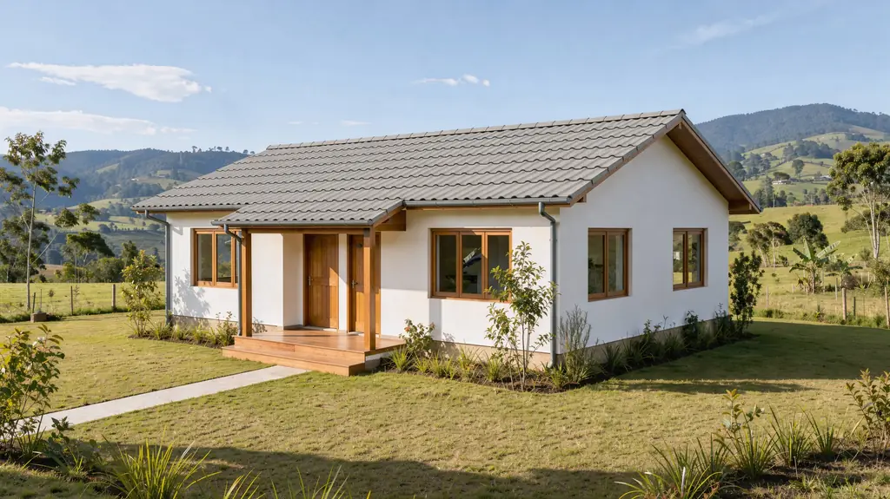
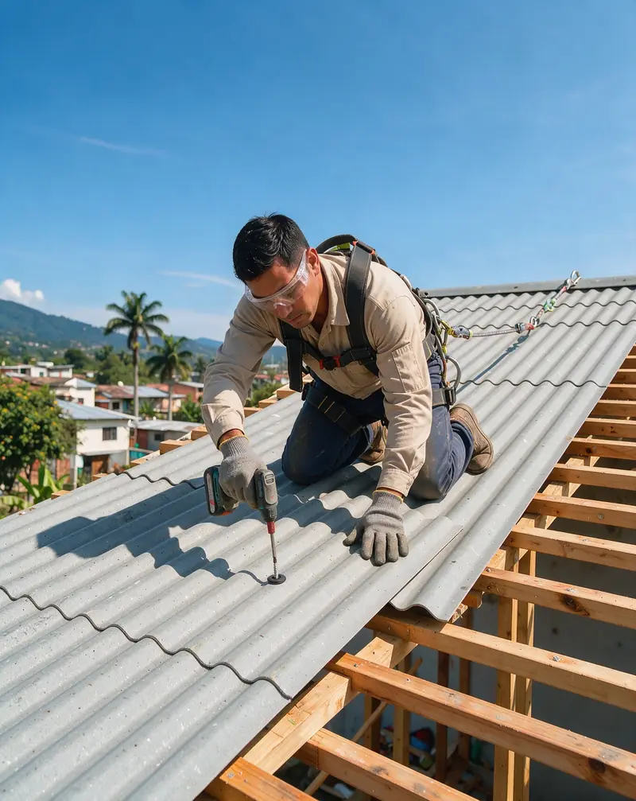
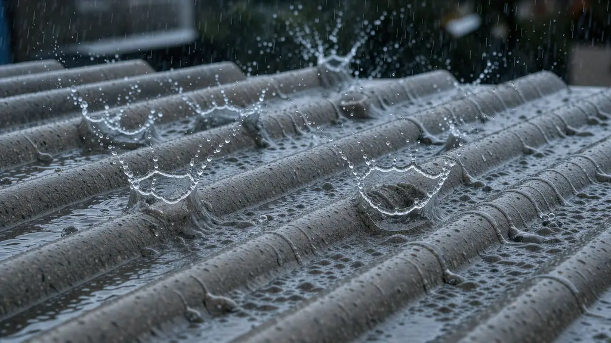
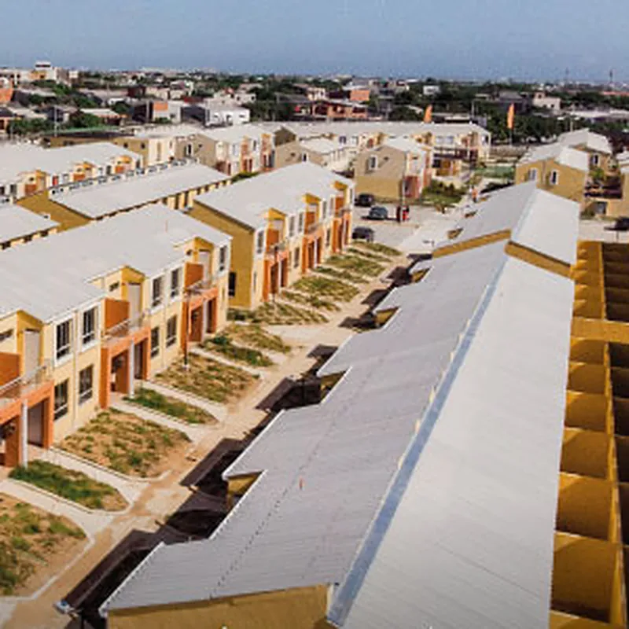
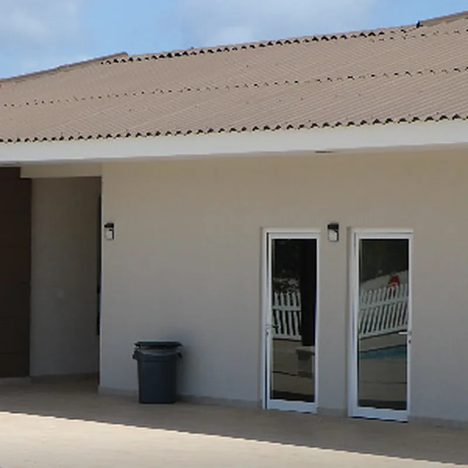

Tonos aproximados según la carta de colores de la ficha técnica.
Fotos reales de obra eternit.com.co


Tejas de fibrocemento
Teja Ondulada Perfil 7
La Teja Ondulada Perfil 7 de Eternit es una teja de fibrocemento para cubiertas y fachadas de todo tipo de construcción. Mide 0,92 m de ancho (0,873 m útiles), se fabrica en seis largos, de 0,91 a 3,05 m, pesa 11,35 kg/m² y cumple la NTC 4694, categoría C, clase 6. No contiene asbesto.
- Ancho útil
- 873mm
- Largos
- 0,91–3,05m
- Peso
- 11,35kg/m²
- Pendiente mín.
- 15°27 %
- Espesor
- 5,5mm
- Norma
- NTC 4694C6
Referencias el número es el largo en pies
- No. 30,91 m · pedido
- No. 41,22 m
- No. 51,52 m
- No. 61,83 m
- No. 82,44 m
- No. 103,05 m
Color: · ¿No sabes cuántas? Calcúlalo
- Garantía Eternit
- 0 % asbesto
- NTC 4694 · C6
- Distribuidores en todo el país
Datos de la ficha técnica oficial (versión oct. 2023) · revisado
Medidas
El número es el largo en pies.
La No. 4 mide 4 pies (1,22 m); la No. 10, diez (3,05 m). Elige una referencia y mira cómo se apoya en las correas.
- Largo total
- 1,83m
- Largo útil
- 1,69m
- Área útil
- 1,48m²
- Peso
- 19,11kg
Ver tabla completa de referencias
| Referencia | Largo total (m) | Largo útil (m) | Área útil (m²) | Peso (kg) | Luz entre correas (m) |
|---|---|---|---|---|---|
| No. 3* | 0,91 | 0,77 | 0,67 | 9,55 | 0,77 |
| No. 4 | 1,22 | 1,08 | 0,94 | 12,74 | 1,08 |
| No. 5 | 1,52 | 1,38 | 1,20 | 15,92 | 1,38 |
| No. 6 | 1,83 | 1,69 | 1,48 | 19,11 | 1,69 |
| No. 8 | 2,44 | 2,30 | 2,01 | 25,48 | 1,15 + 1,15 |
| No. 10 | 3,05 | 2,91 | 2,54 | 31,85 | 1,455 + 1,455 |
Ancho total 0,92 m · ancho útil 0,873 m · traslapo longitudinal 0,14 m · traslapo lateral 0,047 m (¼ de onda). * La No. 3 se despacha bajo pedido. Los pesos varían ±10 % según la humedad.
Calculadora
¿Cuántas tejas necesitas?
Mide tu construcción, elige la referencia y te decimos cuántas tejas, tornillos y caballetes necesitas, y cuánto pesa.
—tejas
- Área de cubierta
- —
- Hiladas × tejas por hilada
- —
- Tornillos (2 por teja)
- —
- Caballetes aprox.
- —
- Líneas de correas por agua
- —
- Peso de las tejas
- —
Incluye 5 % de desperdicio. Cálculo orientativo con los datos de la ficha técnica; confirma cantidades y accesorios con un asesor y el manual de instalación.

Instalación
Seis pasos para un techo que no gotea.
Revisa la estructura
Correas alineadas, niveladas y sin salientes, con apoyos de mínimo 40 mm de ancho. Pendiente mínima de 15° (27 %).
Define el sentido de montaje
Instala de abajo hacia arriba y en sentido contrario al viento dominante: de izquierda a derecha o al revés.
Despunta en el suelo
Corta las esquinas donde se cruzan cuatro tejas antes de subirlas. Nunca hagas despuntes sobre la cubierta.
Traslapa
14 cm en sentido longitudinal y un cuarto de onda (47 mm) en sentido lateral.
Fija
Dos tornillos por teja en las crestas de las ondas 1 y 5, con atornillador de torque graduable. Nunca con taladro.
Remata
Instala los caballetes con la fijación en las crestas de las ondas y la cara lisa, con el sello de garantía, hacia el exterior.

Confort acústico
Escucha
el aguacero.
La ficha de la Perfil 7 destaca su confort térmico y acústico. Compara cómo se siente un aguacero bajo una lámina metálica y bajo fibrocemento.
Simulación sonora ilustrativa generada en el navegador: el mismo aguacero sobre los dos techos. Mejor con audífonos. No reemplaza una medición acústica.
Propiedades
Lo que dice la norma.
Cumple la NTC 4694, categoría C, clase 6. El cálculo de la estructura debe cumplir la NSR-10 y es responsabilidad del calculista.
Composición
- Cemento
- Carbonato
- Fibras PVA
- Celulosa
Sin asbesto. Hidrofugada para alta resistencia a la humedad.
| Resistencia perpendicular (saturada) | mín. 2.500 N/m |
|---|---|
| Densidad | mín. 1,35 kg/L |
| Absorción total | máx. 35 % |
| Espesor mínimo promedio | 5,5 mm ± 0,5 mm |
| Peso por superficie | 11,35 kg/m² (±10 % según humedad) |
| Tolerancia de largo y ancho | −5 / +10 mm |
| Fijación | 2 tornillos por teja, crestas de las ondas 1 y 5 |
| Elementos de fijación | NTC 275 |
| Ancho mínimo de apoyo | 40 mm |
| Tratamiento | Hidrofugada: alta resistencia a la humedad |
Pendientes
- 15°27 % · mínima
- 20°36 %
- 25°47 %
- 30°58 %
- 35°70 %
Documentos
Todo en un clic.
- Ficha técnicaTeja Perfil 7 · oct. 2023PDF, 1,5 MB
- ManualManual de bolsillo de cubiertasPDF, 8,2 MB
- GarantíaCertificado de garantía · cubiertas de fibrocementoPDF, 300 KB
- SeguridadFicha de datos de seguridad · teja de fibrocemento PVAPDF, 282 KB
- GuíaPlegable de condensación · 2025PDF, 1,7 MB
- BIMBiblioteca de objetos BIM EternitWeb
Preguntas frecuentes
Preguntas sobre la Perfil 7.
Fuente: ficha técnica oficial · actualizado
¿Qué medidas tiene la Teja Ondulada Perfil 7 de Eternit?
Mide 0,92 m de ancho total y 0,873 m de ancho útil. Se fabrica en seis largos: 0,91 m (No. 3, bajo pedido), 1,22 m (No. 4), 1,52 m (No. 5), 1,83 m (No. 6), 2,44 m (No. 8) y 3,05 m (No. 10). El espesor mínimo promedio es de 5,5 mm.
¿Qué significa el número de la teja Eternit (No. 4, 6, 8 o 10)?
Es el largo de la teja en pies: la No. 4 mide 1,22 m (4 pies), la No. 6 mide 1,83 m (6 pies), la No. 8 mide 2,44 m (8 pies) y la No. 10 mide 3,05 m (10 pies).
¿Cuánto mide una teja Eternit número 6?
La Teja Perfil 7 No. 6 mide 1,83 m de largo por 0,92 m de ancho, con 1,69 m de largo útil y 1,48 m² de área útil. Pesa 19,11 kg (±10 % según la humedad).
¿Cuánto mide la teja Eternit número 8?
La Teja Perfil 7 No. 8 mide 2,44 m de largo por 0,92 m de ancho, con 2,30 m de largo útil y 2,01 m² de área útil. Pesa 25,48 kg y se apoya en tres correas, con luces de 1,15 m.
¿Cuál es la pendiente mínima para instalar una teja ondulada Perfil 7?
La pendiente mínima es de 15°, equivalente a 27 %. Para pendientes menores, la ficha técnica remite al manual de manejo, instalación y mantenimiento de cubiertas.
¿A qué distancia van las correas de una teja P7?
Depende de la referencia: 1,08 m para la No. 4, 1,38 m para la No. 5 y 1,69 m para la No. 6. La No. 8 y la No. 10 llevan un apoyo intermedio, con luces de 1,15 m y 1,455 m.
¿Cuántos tornillos lleva cada teja?
Dos tornillos por teja, ubicados en las crestas de las ondas 1 y 5. Se instalan con atornillador de torque graduable, nunca con taladro, y deben cumplir la NTC 275.
¿La Teja Perfil 7 tiene asbesto?
No. Se fabrica con cemento, carbonato, fibras PVA y celulosa. Todos los productos Eternit son 100 % libres de asbesto.
¿Se puede pintar una teja de fibrocemento?
Sí. Primero hay que estabilizar el sustrato y luego usar una pintura para cubiertas de fibrocemento, resistente a la alcalinidad, como la Pintura para Cubiertas de Fibrocemento Colorcel de Eternit.
¿Por qué aparecen gotas debajo del techo si la teja no está rota?
Suele ser condensación: cuando baja la temperatura exterior, la humedad del interior se condensa bajo la cubierta si el espacio no tiene ventilación adecuada. Eternit publica una guía sobre cómo prevenirla.
¿En qué colores viene la Teja Perfil 7?
La carta de colores de la ficha técnica incluye gris natural, rojo, naranja fuego, ocre otoño, verde aceituna, ladrillo colonial, negro y blanco. Son tonos aproximados; la disponibilidad se confirma con la línea de servicio al cliente.
Complementa tu cubierta
También te puede servir.
-


Teja Ondulada Perfil 7 Plus
Mismo perfil que la teja Perfil 7 pero más ancha, con una onda adicional: más área útil, instalación más rápida y ahorro en mano de obra y fijaciones.
- Mayor área útil
- Instalación más rápida
-

Teja Ondulada Perfil 7 Flexiforte
Cubierta económica y versátil para todo tipo de construcción; también puede revestir fachadas. Sus accesorios moldeados se ajustan a la geometría de la teja y garantizan estanqueidad y confort.
- También puede revestir fachadas
-

Teja Ondulada Perfil 10
Teja ondulada de mayor altura de onda y perfil más ancho: 1 m de ancho útil, hasta 3.66 m de largo y luz libre máxima de 2.91 m entre apoyos.
- Ancho útil: 1 m
- Longitud: hasta 3.66 m
-

Pintura para Cubiertas de Fibrocemento
Pinturas base agua con resinas acrílicas estirenadas: alta durabilidad, resistencia a la eflorescencia y la intemperie, acabado de apariencia cerámica, buena estabilidad del color y resistencia a sustratos alcalinos.
- Alta durabilidad
- Acabado de apariencia cerámica
- Buena estabilidad del color